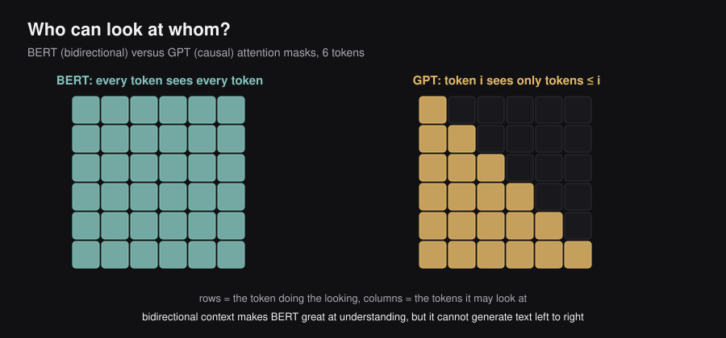
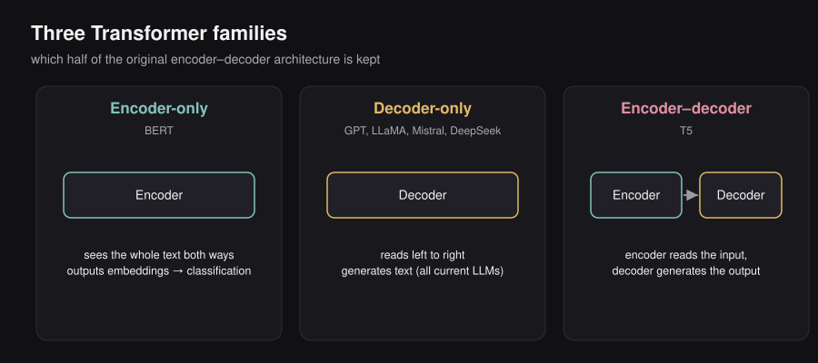
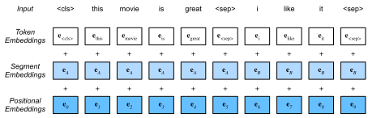
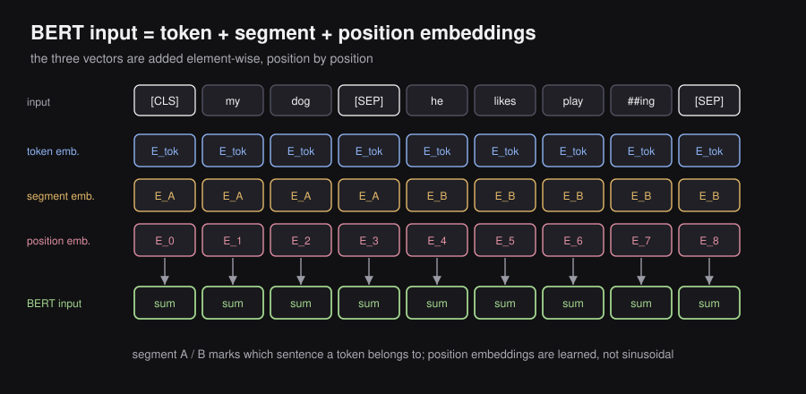
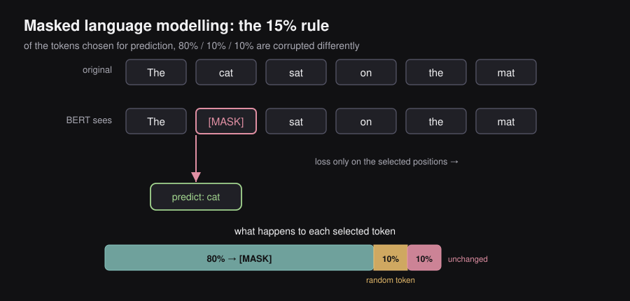
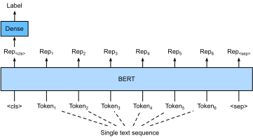
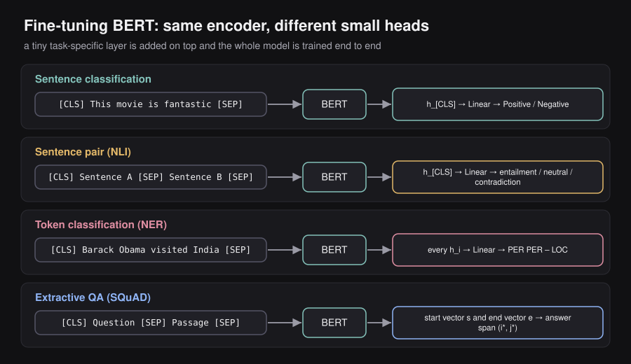

ENGINEERING BLOG / CHAPTER 04 OF 10
BERT and Encoder-Only Models
Although the Transformer was initially proposed as a model for translation tasks, it is now widely used across many other applications. Depending on which half of the original architecture is kept, three families exist:
- Encoder-only. Bidirectional Encoder Representations from Transformers (BERT) is a Transformer-based model composed of a stack of encoders that takes some text as input, and outputs meaningful embeddings, which can be later used in downstream classification tasks. A
[CLS]token is added at the beginning of the sequence to capture the meaning of the sentence; its encoded embedding is often used in downstream tasks, such as sentiment extraction. This chapter is about this family. - Decoder-only. Generative Pre-trained Transformer (GPT) is an autoregressive Transformer-based model that is composed of a stack of decoders. Contrary to BERT and its derivatives, GPT treats all problems as text-to-text problems. Most of the current state-of-the-art LLMs rely on a decoder-only architecture, such as the GPT series, LLaMA, Mistral, Gemma, DeepSeek, etc. (Chapter 5 onwards.)
- Encoder-decoder. Models like T5 are also autoregressive and share many characteristics with decoder-only models.
The two components have different roles: the encoder’s encoded embeddings encapsulate the meaning of the input, while the decoder’s decoded embeddings encapsulate the meaning of both the input and the output predicted so far.
Assumed background: You know the Transformer architecture well — attention, Q/K/V, multi-head attention, encoder stack, positional encodings, layer norm, residual connections. BERT is built entirely on top of these. This chapter focuses only on what BERT adds or changes.
4.1 — Why BERT Exists
The original Transformer (“Attention Is All You Need”, 2017) has both an encoder and decoder. GPT took the decoder only and trained it to predict the next token left-to-right. That works for generation, but it’s fundamentally unidirectional — when processing token , the model cannot see tokens to its right.
BERT (Google, 2018) took the encoder only and asked: what if every token could attend to every other token simultaneously, in both directions? This makes BERT useless for generation (you can’t autoregressively produce text if you’ve seen the future), but extraordinarily powerful for understanding tasks like classification, NER, and question answering.
BERT = Encoder-only Transformer, trained bidirectionally via masked language modeling.
4.2 — Architecture Overview


┌─────────────────────────────────────────────────────────┐
│ BERT Architecture │
│ │
│ Input: [CLS] tok₁ tok₂ ... tokₙ [SEP] │
│ ↓ ↓ ↓ ↓ ↓ │
│ ┌───────────────────────────────────────────────┐ │
│ │ Token Emb + Segment Emb + Position Emb │ │
│ └───────────────────────────────────────────────┘ │
│ ↓ │
│ ┌────────────────────┐ │
│ │ Transformer Enc 1 │ ← Multi-Head Self-Attention │
│ │ │ (bidirectional, no mask) │
│ │ │ ← Feed-Forward Network │
│ │ │ ← LayerNorm + Residuals │
│ └────────────────────┘ │
│ ↓ │
│ ┌────────────────────┐ │
│ │ Transformer Enc 2 │ │
│ └────────────────────┘ │
│ ↓ (× L layers total) │
│ ┌────────────────────┐ │
│ │ Transformer Enc L │ │
│ └────────────────────┘ │
│ ↓ │
│ Output: h_[CLS] h₁ h₂ ... hₙ h_[SEP] │
│ (one contextual vector per input token) │
└─────────────────────────────────────────────────────────┘BERT Base vs BERT Large
| Config | Layers (L) | Hidden dim (H) | Attn heads (A) | Parameters |
|---|---|---|---|---|
| BERT-Base | 12 | 768 | 12 | 110M |
| BERT-Large | 24 | 1024 | 16 | 340M |
The original Transformer paper used 6 encoder layers with H=512. BERT significantly scaled both depth and width.
4.3 — Input Representation
This is the most important deviation from the vanilla Transformer encoder. BERT’s input embedding is a sum of three learned embedding tables:


where all three components live in .
Token: [CLS] My dog is cute [SEP] He likes [SEP]
↓ ↓ ↓ ↓ ↓ ↓ ↓ ↓ ↓
Token Emb: e_CLS e_My e_dog e_is e_cute e_SEP e_He e_lik e_SEP
Segment: A A A A A A B B B
↓ ↓ ↓ ↓ ↓ ↓ ↓ ↓ ↓
Seg Emb: s_A s_A s_A s_A s_A s_A s_B s_B s_B
Position: 0 1 2 3 4 5 6 7 8
↓ ↓ ↓ ↓ ↓ ↓ ↓ ↓ ↓
Pos Emb: p_0 p_1 p_2 p_3 p_4 p_5 p_6 p_7 p_8
Final: ↓ ↓ ↓ ↓ ↓ ↓ ↓ ↓ ↓
sum sum sum sum sum sum sum sum sumToken Embeddings
Standard lookup table over a 30,000-token WordPiece vocabulary. WordPiece splits unknown or rare words into subword units:
unbelievable→un,##bel,##ievableplaying→play,##ing
The ## prefix means “continuation of the previous subword.” This handles out-of-vocabulary words gracefully — even a word BERT has never seen can be decomposed into known subwords.
Segment Embeddings
Every token is assigned to either Segment A or Segment B. This embedding tells BERT which of the two input sentences a token belongs to. When only one sentence is given, all tokens get Segment A. The two learned vectors are shared across all positions.
This is critical for two-sentence tasks (NLI, QA, sentence similarity).
Position Embeddings
Unlike the sinusoidal positional encodings in the original Transformer, BERT uses learned position embeddings — one vector per absolute position, up to position 512. These are also just rows in a learned embedding table of shape .
4.4 — Special Tokens
Two special tokens are added to every input:
[CLS] — placed at the very start. After passing through all encoder layers, the output vector at this position, , is used as the aggregate sequence representation for classification tasks. It has no inherent linguistic meaning; the model learns to compress sentence-level information into it during pretraining.
[SEP] — marks the boundary between two sentences (or signals end of input). For single-sentence inputs, one [SEP] is appended at the end. For two-sentence inputs:
[CLS] Sentence_A_tokens [SEP] Sentence_B_tokens [SEP]4.5 — Pretraining Objectives
BERT is not trained on next-token prediction (that would be unidirectional). Instead it has two simultaneous pretraining tasks.
Masked Language Modeling (MLM)
This is the core innovation. Before feeding a sentence to BERT, 15% of tokens are randomly selected. Of those selected tokens:

- 80% are replaced with the special
[MASK]token - 10% are replaced with a random token from the vocabulary
- 10% are left unchanged
The model must predict the original token at each masked position. The loss is cross-entropy computed only over the selected 15% of positions:
where is the set of masked positions and is the encoder output at position .
The prediction head is simply:
with .
Why the 80/10/10 split? If only [MASK] tokens were used, BERT would never see real tokens at those positions during pretraining but would always see them at fine-tuning — a train/test mismatch. The random substitutions (10%) and unchanged tokens (10%) force the model to maintain a useful representation for every token, not just masked ones.
Why 15%? Too little masking → inefficient learning signal (most tokens are trivially predicted). Too much masking → the model loses enough context that it can’t predict anything meaningful.
Example:
Original: The cat sat on the mat
Masked: The [MASK] sat on the mat
Target: catBecause attention is bidirectional, BERT can use all surrounding tokens — both “The” before and “sat on the mat” after — to recover “cat”. This is a fundamentally richer signal than left-to-right LM.
Next Sentence Prediction (NSP)
To capture cross-sentence relationships, BERT also trains on a binary classification task. Given sentence pair (A, B):
- 50% of the time B is the actual next sentence → label
IsNext - 50% of the time B is a random sentence from the corpus → label
NotNext
The [CLS] vector after the final encoder layer is fed into a linear classifier for this.
Combined loss:
Note: Later work (RoBERTa, 2019) found NSP either unhelpful or mildly harmful and removed it. MLM is the essential training signal; NSP was a well-intentioned but somewhat flawed addition.
4.6 — Pretraining Data and Scale
BERT was pretrained on:
- BooksCorpus (~800M words)
- English Wikipedia (~2,500M words, text only)
BERT-Base was trained for 1 million steps with batch size 256, sequence length 128 (for 90% of steps) then 512 (for 10%). Training used 16 TPU v3 chips for 4 days.
4.7 — What Comes Out: Contextual Representations
After passing through all encoder layers, every input token has a corresponding output vector . Unlike static word embeddings (Word2Vec, GloVe), these representations are context-dependent.
The same word “bank” in two sentences produces different vectors:
"I sat on the river bank." → h_bank reflects waterway context
"I deposited money at the bank." → h_bank reflects financial contextThis is because every token’s representation is shaped by bidirectional self-attention over the entire sequence.
4.8 — Fine-Tuning
Fine-tuning is where BERT’s value is realized. The pretrained model is adapted to a specific task by adding a small task-specific head and training the whole system end-to-end on labeled data, usually for just 3–5 epochs.


Pretrained BERT
↓
Task Head (small, task-specific)
↓
Fine-tune on labeled data
↓
Task-specific modelThe pretrained weights serve as an initialization that already encodes rich linguistic knowledge. Only the task head starts random. Fine-tuning typically requires orders of magnitude less labeled data than training from scratch.
Sentence Classification
Use the [CLS] output vector as the sentence representation, feed it to a linear classifier:
Input: [CLS] This movie is fantastic [SEP]
↓
BERT Encoder Stack
↓
h_[CLS] ──→ Linear(H → num_classes) ──→ Positive / NegativeSentence-Pair Tasks (NLI, Semantic Similarity)
Concatenate both sentences with [SEP], again use [CLS]:
[CLS] Sentence_A [SEP] Sentence_B [SEP]
↓
h_[CLS] → Linear → Entailment / Neutral / ContradictionToken Classification (NER, POS Tagging)
Each token’s output vector is independently classified:
[CLS] Barack Obama visited India [SEP]
↓ ↓ ↓ ↓
h_CLS h_Bar h_Oba h_vis h_Ind
↓ ↓ ↓
PER PER LOCExtractive Question Answering (SQuAD)
Input: [CLS] Question [SEP] Passage [SEP]
The answer is a contiguous span within the passage. BERT learns two vectors (start and end pointers):
The answer span is where:
This is elegant — no span enumeration, just two learned dot products applied to all token representations simultaneously.
4.9 — Why BERT Cannot Generate Text
Since you know Transformers, this is worth making precise. BERT’s encoder uses full bidirectional attention — every token can attend to every other token, including future positions. During pretraining, this is exactly what lets BERT leverage both left and right context to predict masked tokens.
Autoregressive generation requires modeling:
This requires a causal mask that blocks attention to positions . BERT has no such mask and was not trained with this objective. BERT instead learns:
i.e., the distribution over a token given all other tokens — a fundamentally different (and non-decomposable) joint distribution. You cannot sequentially sample from this to generate fluent text. That’s why GPT (decoder-only, causal mask, left-to-right LM objective) dominates generation while BERT dominates understanding.
4.10 — BERT Variants
The pretraining + fine-tuning paradigm proved more important than any specific architectural choice. Several follow-up models improved on BERT:
| Model | Key change vs BERT |
|---|---|
| RoBERTa (2019) | Removed NSP, larger batches, more data, dynamic masking → stronger baseline |
| ALBERT (2019) | Factorized embedding matrices, cross-layer parameter sharing, SOP task → 18x fewer params |
| DistilBERT (2019) | Knowledge distillation from BERT-Base → 60% the size, 97% the performance |
| DeBERTa (2020) | Disentangled attention (position and content in separate matrices) + enhanced mask decoder |
| SBERT (2019) | Siamese BERT with mean-pooling; produces fixed sentence embeddings suitable for semantic similarity |
ALBERT’s factorization is worth understanding. BERT ties the token embedding size to (hidden size), so embedding matrix is params. ALBERT factorizes this as:
with (e.g., ), reducing embedding parameters by with negligible performance loss.
4.11 — Limitations
No text generation. Bidirectional attention makes autoregressive decoding fundamentally incompatible with BERT’s architecture and training objective.
Max sequence length = 512 tokens. Position embeddings are learned up to 512. Long documents must be chunked, which loses cross-chunk context.
Pretraining/fine-tuning mismatch. The [MASK] token appears during pretraining but never during fine-tuning. The 80/10/10 split mitigates but doesn’t fully solve this.
NSP was weak. Later found to provide negligible or negative benefit. The task was too easy — random sentences from different documents were trivially distinguishable by topic.
Compute-intensive pretraining. While fine-tuning is cheap, pretraining requires significant compute (days on many TPUs).
4.12 — The Complete Picture
Raw corpus (Wikipedia + Books)
↓
WordPiece Tokenization
↓
Add [CLS], [SEP], segment labels
Mask 15% tokens (MLM)
Pair sentences (NSP 50/50)
↓
Token Emb + Segment Emb + Pos Emb
↓
L × Transformer Encoder Layers
(bidirectional multi-head attention, FFN, LN, residuals)
↓
MLM loss: predict masked tokens
NSP loss: [CLS] → IsNext/NotNext
↓
PRETRAINED BERT
↓
Add task head (1–2 layers)
Fine-tune on downstream data
↓
FINE-TUNED MODELMathematically, the whole pipeline is:
where is the pretrained BERT (fixed structure, learned weights), is the task head (learned from scratch), and is the task prediction. The insight: already encodes a rich prior over language, so needs very little labeled data to specialize.
4.13 — Key Numbers to Remember
| Thing to remember | Value |
|---|---|
| BERT-Base layers | 12 |
| BERT-Large layers | 24 |
| BERT-Base hidden dim | 768 |
| BERT-Large hidden dim | 1024 |
| BERT-Base params | 110M |
| BERT-Large params | 340M |
| Max sequence length | 512 |
| Vocab size (WordPiece) | ~30,000 |
| MLM masking rate | 15% |
| Of those: replace w/ [MASK] | 80% |
| Of those: replace w/ random | 10% |
| Of those: keep unchanged | 10% |
| Pretraining steps | 1M |
| Training data | ~3.3B words |
Paper: Devlin et al. (2018), “BERT: Pre-training of Deep Bidirectional Transformers for Language Understanding.” arXiv:1810.04805
4.14 — Knowledge distillation: how DistilBERT is made
Definition. Knowledge distillation trains a smaller ‘student’ model to mimic a larger ‘teacher’ model’s output distribution, transferring most of its quality at a fraction of the size.
Intuition. The teacher’s soft probabilities (e.g. ‘70% cat, 25% dog’) carry more information than the hard label alone, so the student learns faster and smaller. DistilBERT keeps about 97% of BERT’s performance with roughly 40% fewer parameters. RoBERTa, by contrast, keeps the architecture but trains better: more data, longer, bigger batches, dynamic masking, and dropping NSP.
Distillation minimizes a temperature-scaled KL divergence to the teacher distribution:
Temperature softens both distributions so the student matches the teacher’s relative confidences.
Key insight. DistilBERT optimizes for efficiency; RoBERTa optimizes for performance. Same architecture, opposite goals — a reminder that how you train often matters as much as what you train. The pretrain-then-finetune paradigm — learn once on cheap unlabeled text, reuse everywhere — is the template the whole field now follows.